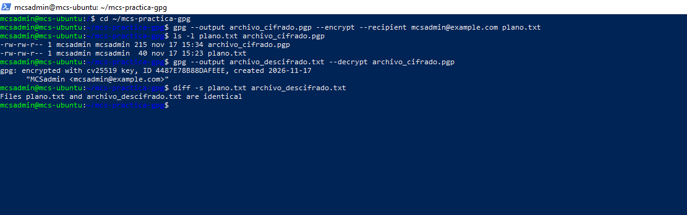
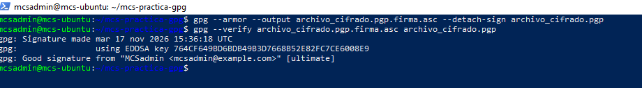
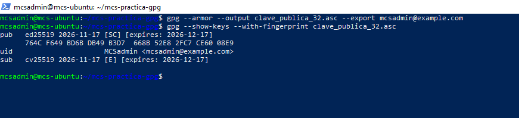
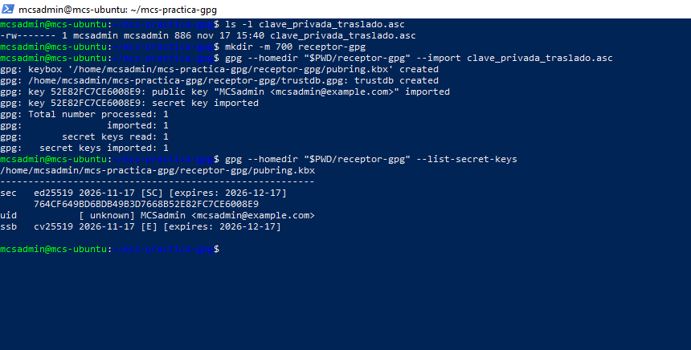
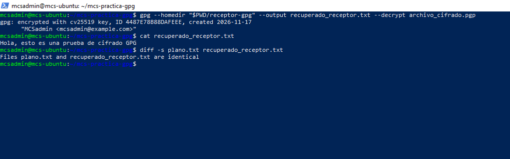

Entorno y alcance
Práctica de Miguel Castillo Soria · Seguretat i Alta Disponibilitat · ASIX. Ejecución del 17 de noviembre de 2026 en Ubuntu sin escritorio, con el usuario mcsadmin. Carpeta: ~/mcs-practica-gpg. Se documentan las salidas reales compartidas durante la práctica; los bloques extensos se presentan mediante extractos identificados.
Caso práctico 3.1 · Utilización de GPG
1 · Versión y generación de claves
mcsadmin@mcs-ubuntu:~$ gpg --version
gpg (GnuPG) 2.4.4
libgcrypt 1.10.3
Home: /home/mcsadmin/.gnupg
Supported algorithms:
Pubkey: RSA, ELG, DSA, ECDH, ECDSA, EDDSAExtracto de la versión instalada. Se creó la carpeta y se utilizó el asistente completo para observar las opciones disponibles.
mkdir -p ~/mcs-practica-gpg
cd ~/mcs-practica-gpg
gpg --full-generate-keyPlease select what kind of key you want:
(1) RSA and RSA
(2) DSA and Elgamal
(3) DSA (sign only)
(4) RSA (sign only)
(9) ECC (sign and encrypt) *default*
(10) ECC (sign only)
(14) Existing key from card
Please select which elliptic curve you want:
(1) Curve 25519 *default*
(4) NIST P-384
(6) Brainpool P-256Se aceptaron ECC y Curve 25519, con caducidad de 30 días, identidad MCSadmin <mcsadmin@example.com> y frase de paso. La dirección es ficticia y se utiliza solo para identificar la clave de prácticas.
public and secret key created and signed.
pub ed25519 2026-11-17 [SC] [expires: 2026-12-17]
764CF649BD6BDB49B3D7668B52E82FC7CE6008E9
uid MCSadmin <mcsadmin@example.com>
sub cv25519 2026-11-17 [E] [expires: 2026-12-17]S: firma; C: certificación; E: cifrado. La clave primaria Ed25519 firma y certifica; la subclave Cv25519 permite cifrar.
2 · Listado de claves
gpg --list-keys
gpg --list-secret-keyspub ed25519 2026-11-17 [SC] [expires: 2026-12-17]
764CF649BD6BDB49B3D7668B52E82FC7CE6008E9
uid [ultimate] MCSadmin <mcsadmin@example.com>
sub cv25519 2026-11-17 [E] [expires: 2026-12-17]
sec ed25519 2026-11-17 [SC] [expires: 2026-12-17]
764CF649BD6BDB49B3D7668B52E82FC7CE6008E9
uid [ultimate] MCSadmin <mcsadmin@example.com>
ssb cv25519 2026-11-17 [E] [expires: 2026-12-17]Extractos de ambos listados. pub/sub identifican componentes públicos y sec/ssb los secretos. El listado no revela el material secreto. En esta instalación el anillo público usa pubring.kbx, a diferencia del antiguo pubring.gpg citado en el PDF.
3 · Certificado de revocación
gpg --output certif-revocacion.asc --gen-revoke 764CF649BD6BDB49B3D7668B52E82FC7CE6008E9Se confirmó la creación, se eligió el motivo 0 (sin motivo especificado), se dejó vacía la descripción y se autorizó con la frase de paso.
ASCII armored output forced.
Revocation certificate created.Extracto de la salida. Crear el certificado no revoca la clave: permite hacerlo posteriormente si se pierde o compromete. GPG también había creado automáticamente otro certificado en openpgp-revocs.d. Su contenido queda fuera de esta página.
4 · Exportación de la clave pública
gpg --armor --output mi_clave_publica.asc --export mcsadmin@example.com
cat mi_clave_publica.ascLa exportación terminó sin salida por pantalla y cat mostró el bloque público completo, delimitado por -----BEGIN PGP PUBLIC KEY BLOCK----- y -----END PGP PUBLIC KEY BLOCK-----. No se reproduce aquí el cuerpo Base64; la huella se comprueba en el caso 3.2.
5 · Importar la clave de un compañero y servidores de claves
Se recibiría el archivo público, se comprobaría su huella por un canal independiente y se importaría. Antes de certificar una clave hay que verificar la identidad de su propietario.
gpg --show-keys --with-fingerprint clave_companero.asc
gpg --import clave_companero.asc
gpg --list-keys
gpg --fingerprint IDENTIFICADOR
gpg --sign-key HUELLA_VERIFICADAEstas órdenes describen el procedimiento y no tienen salida de ejecución asociada. En el enunciado, firmar un archivo de clave con --sign no equivale a certificar la clave: para esto se utiliza --sign-key sobre su identificador.
Los servidores permiten publicar (--send-keys), recibir (--recv-keys), buscar (--search-keys) y actualizar (--refresh-keys) claves públicas con --keyserver. No se publicó ni consultó ninguna clave en servidores durante esta práctica.
6 · Cifrado y descifrado
echo "Hola, esto es una prueba de cifrado GPG" > plano.txt
cat plano.txt
Hola, esto es una prueba de cifrado GPG
gpg --armor --output cifrado.asc --encrypt --recipient mcsadmin@example.com plano.txt
cat cifrado.ascEl último comando mostró un bloque PGP MESSAGE en ASCII armor. El contenido dejó de ser legible como texto original.
mcsadmin@mcs-ubuntu:~/mcs-practica-gpg$ gpg --output plano_recuperado.txt --decrypt cifrado.asc
gpg: encrypted with cv25519 key, ID 4487E78B88DAFEEE, created 2026-11-17
"MCSadmin <mcsadmin@example.com>"
mcsadmin@mcs-ubuntu:~/mcs-practica-gpg$ cat plano_recuperado.txt
Hola, esto es una prueba de cifrado GPG
mcsadmin@mcs-ubuntu:~/mcs-practica-gpg$ diff -s plano.txt plano_recuperado.txt
Files plano.txt and plano_recuperado.txt are identicalSe cifra para el destinatario usando su clave pública; el descifrado requiere su clave privada. La igualdad de archivos comprueba la recuperación íntegra.
7 · Tres formas de firma digital
Firma que incluye el archivo
gpg --armor --output firmado.asc --sign plano.txt
gpg --verify firmado.asc
gpg: Signature made mar 17 nov 2026 15:24:54 UTC
gpg: using EDDSA key 764CF649BD6BDB49B3D7668B52E82FC7CE6008E9
gpg: Good signature from "MCSadmin <mcsadmin@example.com>" [ultimate]El mensaje firmado contiene los datos y su firma; no aporta confidencialidad por sí solo.
Firma en texto claro
gpg --output firmado_legible.asc --clearsign plano.txt
cat firmado_legible.asc
gpg --verify firmado_legible.asc
gpg: Signature made mar 17 nov 2026 15:25:30 UTC
gpg: using EDDSA key 764CF649BD6BDB49B3D7668B52E82FC7CE6008E9
gpg: Good signature from "MCSadmin <mcsadmin@example.com>" [ultimate]La salida de cat mostró el texto original bajo BEGIN PGP SIGNED MESSAGE, con Hash: SHA512, seguido del bloque de firma.
Firma separada
gpg --armor --output firma_separada.asc --detach-sign plano.txt
gpg --verify firma_separada.asc plano.txt
gpg: Signature made mar 17 nov 2026 15:26:28 UTC
gpg: using EDDSA key 764CF649BD6BDB49B3D7668B52E82FC7CE6008E9
gpg: Good signature from "MCSadmin <mcsadmin@example.com>" [ultimate]La firma acompañante se guarda separada del original. Para verificarla hacen falta ambos archivos.
8 · Extraer el contenido firmado e inspeccionar paquetes
gpg --output plano_desde_firma.txt --decrypt firmado.asc
gpg: Signature made mar 17 nov 2026 15:24:54 UTC
gpg: using EDDSA key 764CF649BD6BDB49B3D7668B52E82FC7CE6008E9
gpg: Good signature from "MCSadmin <mcsadmin@example.com>" [ultimate]
cat plano_desde_firma.txt
Hola, esto es una prueba de cifrado GPG
diff -s plano.txt plano_desde_firma.txt
Files plano.txt and plano_desde_firma.txt are identical--decrypt también extrae los datos de este mensaje firmado y verifica su firma, aunque no estuviera cifrado.
gpg --list-packets firmado.asc
:compressed packet: algo=1
:onepass_sig packet: keyid 52E82FC7CE6008E9
version 3, sigclass 0x00, digest 10, pubkey 22, last=1
:literal data packet:
mode b (62), created 1794929094, name="plano.txt",
raw data: 40 bytes
:signature packet: algo 22, keyid 52E82FC7CE6008E9Extracto de la inspección: compresión ZIP (1), anuncio de firma, datos literales y firma EdDSA (22), con resumen SHA-512 (10).
Respuestas del caso 3.1
Pregunta 2 · Tipos, tamaños y opción predeterminada
El menú observado ofrece RSA y RSA, DSA y ElGamal, DSA solo firma, RSA solo firma, ECC firma/cifrado, ECC solo firma y una clave existente en tarjeta. La tarjeta utiliza una clave ya disponible, con las características admitidas por el dispositivo.
| Familia | Tamaños / curvas | Observación |
|---|---|---|
| RSA | 1024–4096 bits en el asistente ordinario | Firma y/o cifrado. |
| DSA | 1024–3072 bits | Firma; combinable con ElGamal para cifrado. |
| ElGamal | 1024–4096 bits | Subclave de cifrado. |
| ECC observada | Curve 25519; NIST P-384; Brainpool P-256 | Tamaños ligados a la curva, no una longitud libre. |
Los rangos RSA/DSA/ElGamal son una referencia del código de GnuPG 2.4.4; no se generaron claves de esas familias. En nuestra ejecución la opción predeterminada fue ECC y Curve 25519: Ed25519 para firma/certificación y Cv25519 para cifrado, aproximadamente 255 bits de campo. Los números de bits de ECC y RSA no se comparan directamente como niveles de seguridad.
El PDF describe configuraciones antiguas; su RSA de 2048 bits no fue el valor predeterminado observado. Fuente: generación de claves de GnuPG 2.4.4.
Pregunta 3 · ¿Qué hace --armor?
--armor, abreviado -a, convierte la salida binaria OpenPGP en texto ASCII mediante Base64, con delimitadores que identifican el contenido. Facilita copiar claves, mensajes y firmas a canales de texto. Sin esta opción, GPG genera normalmente formato binario.
Puede producir bloques PGP PUBLIC KEY BLOCK, PGP MESSAGE o PGP SIGNATURE. La codificación añade tamaño, aproximadamente un tercio más por Base64, además de cabeceras y saltos de línea. La extensión .asc es una convención, no la que activa el formato.
No cifra ni firma por sí misma: la operación la determinan --encrypt, --sign o --export. Una clave privada exportada con armor sigue siendo privada. --clearsign ya crea un mensaje firmado legible, por lo que no necesita añadir --armor.
Pregunta 4 · Cifrar un archivo ya cifrado
gpg --armor --output doble_cifrado.asc --encrypt --recipient mcsadmin@example.com cifrado.asc
gpg --output primera_capa.asc --decrypt doble_cifrado.asc
diff -s cifrado.asc primera_capa.asc
Files cifrado.asc and primera_capa.asc are identical
gpg --output texto_final.txt --decrypt primera_capa.asc
diff -s plano.txt texto_final.txt
Files plano.txt and texto_final.txt are identicalSe genera un segundo mensaje cifrado que contiene el primer mensaje cifrado. En ambos descifrados GPG indicó la subclave Cv25519 4487E78B88DAFEEE. El primer descifrado recuperó el archivo aún cifrado; el segundo devolvió el original. Cada capa necesita la clave privada del destinatario correspondiente. En esta prueba se usó el mismo destinatario en ambas capas. No significa que la seguridad se duplique ni sustituye una gestión correcta de claves.
Caso práctico 3.2 · Alternativa por consola
1 · Entorno sin interfaz gráfica
command -v seahorse no devolvió ninguna ruta y echo "$XDG_CURRENT_DESKTOP" devolvió una línea vacía. Se confirmó que Ubuntu solo ofrecía pantalla de texto. Se utilizó la alternativa GPG que recoge el PDF, reutilizando la clave ya creada y listada en 3.1.
2 · Cifrar y descifrar un archivo .pgp
gpg --output archivo_cifrado.pgp --encrypt --recipient mcsadmin@example.com plano.txt
ls -l plano.txt archivo_cifrado.pgp
-rw-rw-r-- 1 mcsadmin mcsadmin 215 nov 17 15:34 archivo_cifrado.pgp
-rw-rw-r-- 1 mcsadmin mcsadmin 40 nov 17 15:23 plano.txt
gpg --output archivo_descifrado.txt --decrypt archivo_cifrado.pgp
gpg: encrypted with cv25519 key, ID 4487E78B88DAFEEE, created 2026-11-17
"MCSadmin <mcsadmin@example.com>"
diff -s plano.txt archivo_descifrado.txt
Files plano.txt and archivo_descifrado.txt are identicalSe generó un mensaje binario de 215 bytes y se recuperó el archivo original de 40 bytes. La igualdad demuestra que el proceso conservó el contenido.

3 · Firmar el documento cifrado
gpg --armor --output archivo_cifrado.pgp.firma.asc --detach-sign archivo_cifrado.pgp
gpg --verify archivo_cifrado.pgp.firma.asc archivo_cifrado.pgp
gpg: Signature made mar 17 nov 2026 15:36:18 UTC
gpg: using EDDSA key 764CF649BD6BDB49B3D7668B52E82FC7CE6008E9
gpg: Good signature from "MCSadmin <mcsadmin@example.com>" [ultimate]Se firmaron los bytes del archivo ya cifrado con la clave privada de firma. La verificación emplea la clave pública y comprueba integridad y correspondencia criptográfica con la clave firmante. No descifra el mensaje. La identificación de una persona requiere además comprobar que esa clave le pertenece. Este procedimiento es cifrar y después firmar, con una firma acompañante.

4 · Exportar la clave pública
gpg --armor --output clave_publica_32.asc --export mcsadmin@example.com
gpg --show-keys --with-fingerprint clave_publica_32.asc
pub ed25519 2026-11-17 [SC] [expires: 2026-12-17]
764C F649 BD6B DB49 B3D7 668B 52E8 2FC7 CE60 08E9
uid MCSadmin <mcsadmin@example.com>
sub cv25519 2026-11-17 [E] [expires: 2026-12-17]El archivo contiene la clave pública esperada, comprobada mediante su huella.

5 · Traslado simulado de la clave privada
(umask 077; gpg --armor --output clave_privada_traslado.asc --export-secret-keys mcsadmin@example.com)
ls -l clave_privada_traslado.asc
-rw------- 1 mcsadmin mcsadmin 886 nov 17 15:40 clave_privada_traslado.asc
mkdir -m 700 receptor-gpg
gpg --homedir "$PWD/receptor-gpg" --import clave_privada_traslado.asc
gpg: key 52E82FC7CE6008E9: public key "MCSadmin <mcsadmin@example.com>" imported
gpg: key 52E82FC7CE6008E9: secret key imported
gpg: Total number processed: 1
gpg: imported: 1
gpg: secret keys read: 1
gpg: secret keys imported: 1
gpg --homedir "$PWD/receptor-gpg" --list-secret-keys
sec ed25519 2026-11-17 [SC] [expires: 2026-12-17]
764CF649BD6BDB49B3D7668B52E82FC7CE6008E9
uid [ unknown] MCSadmin <mcsadmin@example.com>
ssb cv25519 2026-11-17 [E] [expires: 2026-12-17]Extracto de la importación y el listado. El archivo secreto quedó accesible solo por su propietario; el directorio receptor tiene permisos 700. --homedir selecciona un almacén independiente. La confianza unknown del receptor no impide usar la clave privada para descifrar.
La clave privada y el certificado de revocación no se adjuntan a esta web. En un intercambio real se usarían únicamente claves de prácticas y un canal protegido; compartir una clave privada permite usarla para las operaciones que autorice.

6 · Descifrar desde el entorno receptor
gpg --homedir "$PWD/receptor-gpg" --output recuperado_receptor.txt --decrypt archivo_cifrado.pgp
gpg: encrypted with cv25519 key, ID 4487E78B88DAFEEE, created 2026-11-17
"MCSadmin <mcsadmin@example.com>"
cat recuperado_receptor.txt
Hola, esto es una prueba de cifrado GPG
diff -s plano.txt recuperado_receptor.txt
Files plano.txt and recuperado_receptor.txt are identicalEl almacén receptor recuperó el contenido gracias a la clave privada importada. diff confirmó que era idéntico al original.

Respuestas y cobertura del caso 3.2
Pregunta 2: en la alternativa por consola se observaron las opciones de GnuPG descritas en 3.1: predeterminado ECC/Curve 25519. No se comprobó un menú ni un valor predeterminado de Seahorse. El documento propone RSA de 2048 bits como configuración de su ejemplo, pero no es la elegida en nuestra ejecución.
Pregunta 3: la exportación, importación y recuperación funcionan en el entorno receptor local. Queda sin realizar el intercambio literal con un compañero en otro equipo.
Pregunta 4: se firmó el archivo cifrado con --detach-sign y se verificó correctamente. El paso 3 y su captura documentan el procedimiento.
Se realizaron pruebas sobre archivos. No se probó cifrar directorios, usar tarjetas, publicar claves ni eliminar originales. Para cifrar una carpeta por consola se puede archivar primero y cifrar el archivo resultante; este procedimiento no se presenta como ejecutado.
EXAM MODE
Repaso de conceptos y resultados de la práctica.
¿Qué clave cifra y cuál descifra?
La pública del destinatario permite cifrar; la privada correspondiente permite descifrar.
¿Qué hace --armor?
Codifica el resultado OpenPGP en texto ASCII. No añade por sí solo cifrado ni autenticidad.
¿Firmar cifra el contenido?
No. La firma comprueba integridad y vinculación con una clave; la confidencialidad requiere cifrado.
¿Qué demuestra Good signature?
Que los datos verificados corresponden a la firma y a la clave pública usada. La identidad humana depende de verificar esa clave.
¿Qué ocurre con dos capas de cifrado?
Se deben retirar en orden inverso; un primer descifrado puede dejar todavía un mensaje cifrado.
¿Qué se simuló en 3.2?
Un traslado de clave privada entre dos almacenes del mismo Ubuntu, no entre dos equipos.
Documentación
- Enunciado: U3_SAD_practicas_3_GPG.pdf, casos 3.1 y 3.2, páginas 2–14.
- Manual oficial de GnuPG.
- Opciones de entrada y salida.
- Código de generación de claves, versión 2.4.4.